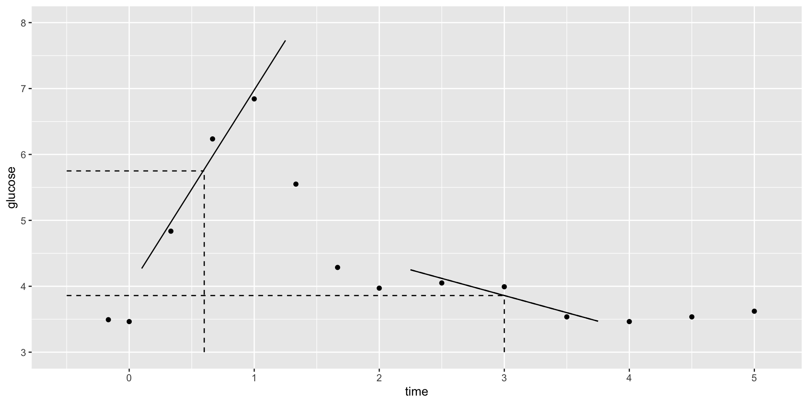

LOESS & GAMs
Context

CONTEXT
world = supervised learning
We want to model some output variable \(y\) using a set of potential predictors (\(x_1, x_2, ..., x_p\)).task = regression
\(y\) is quantitative(nonparametric) algorithm
GOAL
Our usual parametric models (eg: linear regression) are too rigid to represent the relationship between \(y\) and our predictors \(x\). Thus we need more flexible nonparametric models.
Notes: R code
Suppose we want to build a model of response variable y using predictors x1 and x2 in our sample_data.
Build the model
STEP 1 notes:
- We use the
mgcv, notlm, engine to build GAMs. - The
mgcvengine requires us to specify two argument (set_args):adjust_deg_free = tune()indicates that we don’t (yet) know an appropriate value for the penalty tuning parameter. We need to tune it.select_features = TRUEallows the GAM to eliminate a predictor from the model (like LASSO!).
STEP 2 notes: The GAM algorithm does not require any pre-processing of the predictors.
STEP 3 notes: In add_model:
- We need to provide a
formula. - We put a categorical predictor into our model as itself:
x1. - We put a quantitative predictor into our model through a smoothing spline:
s(x2).
# STEP 4: Estimate multiple GAM models using a range of possible penalty parameters
# Calculate the CV MAE for each
set.seed(___)
gam_models <- gam_workflow %>%
tune_grid(
grid = grid_regular(adjust_deg_free(range = c(___, ___)),
levels = 10),
resamples = vfold_cv(sample_data, v = ___),
metrics = metric_set(mae)
)STEP 4 notes:
- Since the CV process is random, we need to
set.seed(___). - We use
tune_grid()instead offit()since we have to build multiple GAM models, each using a different penalty tuning parameters. gridspecifies the values we want to try for the penalty parameteradjust_deg_free().- the
rangespecifies the lowest and highest numbers we want to try. This must be positive. I start withrange = c(0.25, 4)and expand / contract the interval as necessary. levelsis the number of values to try in that range, thus how many GAMs to build.
- the
resamplesandmetricsindicate that we want to calculate a CV MAE for each GAM.
Tuning the GAM
Finalizing & plotting the “best” GAM
Use the GAM to make predictions